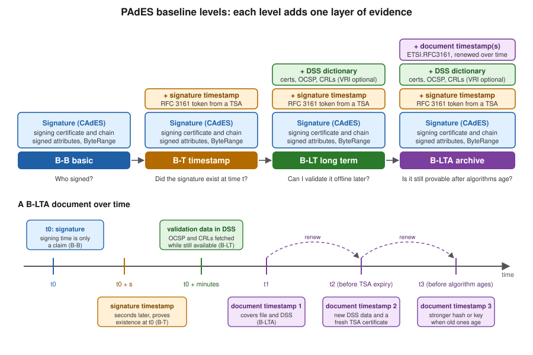

PAdES Baseline Levels: B-B, B-T, B-LT, B-LTA
|
This content was generated with the assistance of AI and should be verified against the official documentation before being relied on in production. |
A digital signature answers a narrow question: which certificate holder approved exactly these bytes. Real documents live
much longer than the certificates that signed them. A certificate expires after a year or two, a CA can revoke it, an
OCSP responder disappears, and a hash function or key size that was fine today is not fine in fifteen years. PAdES
baseline is the European answer to this: four profiles of increasing evidence, named B-B, B-T, B-LT and B-LTA, defined
in ETSI EN 319 142-1 for signatures embedded in PDF files. This page explains what each level adds, which other
standards surround it, how to choose algorithms, how the European eIDAS regulation and the Adobe trust list decide
whether a recipient trusts the result, and how to tell a free test timestamp authority from a commercial one. It is
mostly conceptual. The code is limited to three short, verified pieces: asking a timestamp authority (TSA) for a token
with OpenSSL and with BouncyCastle, producing all four levels with iText’s PdfPadesSigner, and a small inspector that
reports which level a file reaches.
Versions are stated as of 2026-10-09: iText Core 9.8.0 with bouncy-castle-adapter 9.8.0, BouncyCastle 1.86 and Java
21. The mechanics of a PDF signature (hash and sign, /ByteRange, SubFilters, certificates and the shared test PKI used
below) are in Digital Signature Fundamentals. The full
iText signing API is in Signing PDFs with iText, the PDFBox and EU
DSS route is in Signing with PDFBox and EU DSS, and what
a validator does with the evidence is in
Signature Validation and Long-Term Validity.
The running scenario is Bookshelf Billing: a Spring Boot 4 service that signs customer invoices, which must remain
verifiable for as long as the shop has to keep them.
Why signatures need levels
Consider an invoice signed on 2026-10-09 with a certificate valid for 825 days. Five years later an auditor opens it. Three things have changed, and each is a reason for one level.
-
The certificate has expired. A validator needs to know that the signature was made while the certificate was valid, and a PDF reader cannot learn that from the signer’s own claim: the signing time in the file is whatever the signer’s clock said. A trusted, independent time source fixes that, and that is the signature timestamp of level B-T.
-
The certificate may have been revoked since, or the CA’s OCSP responder and CRL distribution point may no longer answer. A validator needs the revocation evidence from the time of signing, kept inside the file. That is the DSS dictionary of level B-LT.
-
The algorithms and the timestamp authority’s own certificate age too. SHA-256 and RSA are fine now, but the evidence itself, including the timestamp, needs protection by a newer timestamp before the old one weakens. That is the document timestamp of level B-LTA, applied repeatedly.
Each level contains the previous one and adds exactly one kind of evidence. That makes the level a useful contract between the producer and the recipient: "B-LT" tells a validator what it can expect to find offline.
The figure below shows the same ladder as stacked layers, and below it the timeline of a B-LTA document: the signature at t0, its signature timestamp seconds later, the validation data collected while the revocation services still answer, and then document timestamps applied repeatedly, each renewing the protection of everything before it.

The ETSI family of standards
Several ETSI documents cooperate. Knowing which one defines what saves a lot of searching, because the names are close.
| Standard | What it defines |
|---|---|
ETSI EN 319 142-1 (V1.2.1) |
PAdES digital signatures, part 1: building blocks and the baseline profiles B-B, B-T, B-LT and B-LTA. This is the page’s main source. A draft V1.3.0 exists but is unpublished as of 2026-10-09. |
ETSI EN 319 142-2 |
PAdES, part 2: the additional signature profiles beyond the baseline, which cover optional attributes that general purpose software rarely produces. Most applications never need it, but it is where "extended" PAdES lives. |
ETSI TS 119 142-3 |
PAdES, part 3: the document time-stamp profile (PAdES-DTS), the |
ETSI EN 319 122-1 and -2 |
CAdES: the CMS Advanced Electronic Signature format that is inside the PAdES signature. PAdES is CAdES placed in a PDF
signature dictionary; the signed attributes (signing certificate reference, content type, message digest) and the
unsigned attributes (the signature timestamp) are CAdES structures. This is the reason the SubFilter is
|
ETSI EN 319 422 |
The profile of the time-stamping protocol and the time-stamp token: what a TSA must put in a response and which extensions and algorithms it may use. It builds on RFC 3161 and RFC 5816. |
ETSI TS 119 312 (V2.1.1, 2026-06) |
The catalogue of cryptographic suites: which hash functions, signature algorithms and key sizes are recommended for which period, and the migration towards post-quantum algorithms. |
RFC 3161, RFC 5816, RFC 6960 |
The IETF specifications beneath the above: the time-stamp protocol, the update that allows SHA-2 identifiers in the signing certificate reference of a token, and OCSP. |
A practical rule: you implement PAdES through a library, so the standards are what you read to settle an argument, not to
write code. The shape to remember is that PAdES = PDF container (ISO 32000) + CAdES signature (EN 319 122) + timestamps
(RFC 3161 profiled by EN 319 422) + validation data stored in the PDF /DSS dictionary (EN 319 142-1) + document
timestamps (TS 119 142-3).
Level B-B: the basic signature
B-B is the minimum that qualifies as a baseline PAdES signature. It is a CAdES-BES signature placed in a signature
dictionary with SubFilter ETSI.CAdES.detached. Besides the signature value over the digest of the /ByteRange, the
signed attributes include the content type, the message digest and a reference to the signing certificate that contains
a hash of that certificate (the signing-certificate-v2 attribute, which is what makes SHA-256 certificate references
possible and what replaced the SHA-1 reference). The signer’s certificate and, normally, the rest of the chain are
embedded.
The claimed signing time is not the authoritative one. In PDF it is stored in the signature dictionary’s /M entry, and
iText fills it with SignerProperties.setClaimedSignDate. A validator must not treat it as proof of when the signing
happened, because the signer controls it.
What B-B guarantees: the content was not altered after signing, and the holder of the private key of the embedded certificate signed it. What it does not guarantee: that the certificate was valid at the time, or that anything about the signature can be checked once the certificate expires. A B-B signature validates today, with the CA online, and becomes harder to validate tomorrow. For a short-lived workflow, such as a customer approving a quotation that is acted on the same day, B-B can be enough.
Level B-T: adding a trusted time
B-T adds a signature timestamp: the digest of the signature value is sent to a TSA, which returns a signed time-stamp
token stating that this digest existed at this time. The token is a CMS SignedData object defined by RFC 3161 and
profiled by ETSI EN 319 422. It is stored as an unsigned attribute of the signature (signature-time-stamp), so it does
not change the signed bytes and can be added after the signature. A validator then asks a different question: not "was
the certificate valid now" but "was it valid at the time the TSA vouches for".
The protocol is a single HTTP exchange. The client sends a TimeStampReq as application/timestamp-query containing a
message imprint (hash algorithm plus digest), an optional nonce to prevent replay and a flag requesting the TSA’s
certificate to be included in the response. The TSA answers with a TimeStampResp as application/timestamp-reply: a
status, and, when granted, the token with the generation time (genTime), a serial number, the policy OID and the
imprint copy. The client must check the status, the nonce and the imprint before using the token.
Asking a TSA with OpenSSL
OpenSSL can build the request, read the reply and verify it, which is the quickest way to see what a token contains. The
commands below were run on 2026-10-09 against FreeTSA with the example invoice. FreeTSA publishes its CA and TSA
certificates at https://freetsa.org/files/cacert.pem and https://freetsa.org/files/tsa.crt; they are downloaded at
run time and not reproduced here.
# 1. Build a request: SHA-256 imprint of the file, random nonce, ask for the TSA certificate
openssl ts -query -data invoice.pdf -sha256 -cert -out invoice.tsq
# 2. Send it; the content type is part of the protocol
curl -s -H 'Content-Type: application/timestamp-query' \
--data-binary @invoice.tsq https://freetsa.org/tsr -o invoice.tsr
# 3. Read the answer (status, generation time, serial, policy OID, TSA name)
openssl ts -reply -in invoice.tsr -text
# 4. Verify the reply against the file and the TSA's chain
curl -s https://freetsa.org/files/cacert.pem -o cacert.pem
curl -s https://freetsa.org/files/tsa.crt -o tsa.crt
openssl ts -verify -data invoice.pdf -in invoice.tsr -CAfile cacert.pem -untrusted tsa.crtThe last command printed Verification: OK, and the text output showed Status: Granted, a hash algorithm of sha256,
a policy OID of 1.2.3.4.1 and Ordering: yes. The tool that ran this was LibreSSL 3.3.6, the openssl that ships
with macOS; OpenSSL 3 accepts the same options. The OpenSSL documentation for the subcommand is
openssl-ts. The protocol and the response format are in
RFC 3161.
Asking a TSA with BouncyCastle
The same exchange in Java uses TimeStampRequestGenerator and TimeStampResponse from BouncyCastle, with
java.net.http.HttpClient for the transport. This is what iText’s TSAClientBouncyCastle does internally, shown here so
that each step is visible. Maven coordinates (the test project also needs the iText artifacts of the next section):
<dependency>
<groupId>org.bouncycastle</groupId>
<artifactId>bcpkix-jdk18on</artifactId>
<version>1.86</version>
</dependency>import org.bouncycastle.asn1.cmp.PKIStatus;
import org.bouncycastle.asn1.nist.NISTObjectIdentifiers;
import org.bouncycastle.tsp.TimeStampRequest;
import org.bouncycastle.tsp.TimeStampRequestGenerator;
import org.bouncycastle.tsp.TimeStampResponse;
import org.bouncycastle.tsp.TimeStampToken;
import java.math.BigInteger;
import java.net.URI;
import java.net.http.HttpClient;
import java.net.http.HttpRequest;
import java.net.http.HttpResponse;
import java.nio.file.Files;
import java.nio.file.Path;
import java.security.MessageDigest;
import java.security.SecureRandom;
public final class TsaQuery {
public static void main(String[] args) throws Exception {
byte[] data = Files.readAllBytes(Path.of(args[0]));
byte[] digest = MessageDigest.getInstance("SHA-256").digest(data);
TimeStampRequestGenerator generator = new TimeStampRequestGenerator();
generator.setCertReq(true); // ask the TSA to embed its certificate
BigInteger nonce = new BigInteger(64, new SecureRandom());
TimeStampRequest request =
generator.generate(NISTObjectIdentifiers.id_sha256, digest, nonce);
HttpRequest http = HttpRequest.newBuilder(URI.create("https://freetsa.org/tsr"))
.header("Content-Type", "application/timestamp-query")
.POST(HttpRequest.BodyPublishers.ofByteArray(request.getEncoded()))
.build();
HttpResponse<byte[]> reply = HttpClient.newHttpClient()
.send(http, HttpResponse.BodyHandlers.ofByteArray());
TimeStampResponse response = new TimeStampResponse(reply.body());
response.validate(request); // nonce and message imprint must match a returned token
if (response.getStatus() > PKIStatus.GRANTED_WITH_MODS) { // rejection: validate() does not throw, no token
throw new IllegalStateException("TSA rejected the request: status " + response.getStatus()
+ ", " + response.getStatusString());
}
TimeStampToken token = response.getTimeStampToken();
System.out.println("status = " + response.getStatus());
System.out.println("genTime = " + token.getTimeStampInfo().getGenTime());
System.out.println("policy = " + token.getTimeStampInfo().getPolicy());
System.out.println("serial = " + token.getTimeStampInfo().getSerialNumber());
System.out.println("hash alg = " + token.getTimeStampInfo().getMessageImprintAlgOID());
Files.write(Path.of(args[0] + ".tst"), token.getEncoded()); // CMS SignedData, RFC 3161
}
}Run against the example invoice on 2026-10-09 it printed status 0 (granted), the generation time, the policy 1.2.3.4.1,
a serial number and the SHA-256 algorithm OID 2.16.840.1.101.3.4.2.1, and wrote a token of about 4.6 kilobytes.
response.validate(request) is the line that matters: it throws TSPValidationException when the nonce or the imprint
of the returned token differ from the request, or when a granted reply carries no token, which is the check that stops a
replayed or swapped token. It does not throw when the TSA rejects the request (a status of 2 or more, with no token), so
the class checks the status itself before reading the token. It does not decide whether the TSA is trustworthy: that
requires validating the token’s signer certificate against a trust anchor, which a PAdES validator does (see
Signature Validation and Long-Term Validity).
Reference: BouncyCastle Java documentation and the
BouncyCastle Java downloads page.
Level B-LT: validation data inside the file
B-T proves when. B-LT makes the file self-contained: everything a validator would normally fetch from the network, at
the time of signing, is stored in the document, so validation works offline years later even if the responders are gone.
In PDF the container is the Document Security Store, the /DSS dictionary in the document catalogue, added by an
incremental update (see How a PDF File Works). It has arrays of
streams:
-
/Certs: the certificates of the chain, including intermediate CAs and the TSA’s chain. -
/OCSPs: OCSP responses (RFC 6960) obtained for the certificates in the chain. -
/CRLs: certificate revocation lists, used where OCSP is not available. -
/VRI: an optional dictionary keyed by the hash of each signature, listing which of the above belong to which signature. The baseline treats it as optional, and a validator can work without it.
The timing matters. Revocation data must be collected after the signature timestamp exists and while the CA still
publishes it, so the producer signs, obtains the timestamp, and only then fetches the OCSP responses and CRLs and appends
the DSS. That is why the signature of a B-LT file no longer covers the whole file: the DSS is an incremental update after
the signed revision, and this is normal and permitted because the signature validity does not depend on the DSS bytes.
An inspector that reports covers whole file=false for the original signature of a B-LT or B-LTA file is reporting
the correct state, not a defect.
Collecting the data needs the information in the certificates: the Authority Information Access extension with an OCSP
responder URL and the CRL Distribution Points extension. A production certificate has them. The throwaway test CA built
for this section does not publish either, and this has a consequence that is easy to hit. iText’s PdfPadesSigner
fails for the test signer with PdfException: Neither ocsp nor crl data are available for the signing certificate or
certificate is revoked. To produce a B-LT file with the test PKI you supply the revocation data yourself, for example a
CRL generated by the test CA at run time with BouncyCastle and returned from a custom ICrlClient, as the section on
producing all four levels shows below. In production you use the default clients and a real certificate.
Level B-LTA: archive timestamps
A timestamp has its own certificate, key and hash algorithm, all of which age. B-LTA protects a B-LT document against
that by adding a document timestamp over the whole file, including the DSS: an ETSI.RFC3161 signature with no signer,
only a token from a TSA (the profile is ETSI TS 119 142-3). Because the timestamp covers the DSS and the previous
revisions, an attacker who later breaks the old algorithms cannot forge new content without also forging the timestamp.
The document is then renewed. Before the TSA certificate used by the last document timestamp expires, and before its
algorithms become doubtful, you add validation data for that timestamp (its chain, its OCSP responses and CRLs) to the
DSS and apply a new document timestamp over the result. The chain of timestamps reaches forward in time, each one
vouching for the previous evidence. iText implements the renewal as PdfPadesSigner.prolongSignatures, which adds new
validation data and a new document timestamp. In the lab run of this page (test CRL for the test certificates, live
FreeTSA, so the OCSP responses concern the TSA’s chain), prolonging the test document grew the DSS from 5 certificates,
2 OCSP responses and 1 CRL to 8 certificates, 4 OCSP responses and 2 CRLs, and a third signature entry with the new
timestamp covered the whole file, while the previous one no longer did.
Renewal is an operational commitment, not a one-off action. For the invoices in the Bookshelf Billing scenario the decision is therefore economic: B-LT is enough when the document has to stay verifiable for a few years and the signing certificate and TSA are expected to remain checkable, and B-LTA, with a scheduled job that prolongs signatures before the TSA certificate and the algorithms age, is the answer when the retention period is long. The scheduling of such a renewal job is an ordinary batch problem, covered in Scheduling for the site’s Spring services.
Producing all four levels with iText
iText 9.8.0 packages the four profiles in one class, com.itextpdf.signatures.PdfPadesSigner, with one method per level:
signWithBaselineBProfile, signWithBaselineTProfile, signWithBaselineLTProfile and signWithBaselineLTAProfile.
The OCSP and CRL clients are set on the signer (setOcspClient, setCrlClient), not passed to the profile methods;
the compiled signatures of version 9.8.0 take the signer properties, the certificate chain, a PrivateKey (or an
IExternalSignature) and, from level T upwards, an ITSAClient. TSAClientBouncyCastle is the TSA client, and
prolongSignatures works on any signed file: it adds validation data for every signature it finds and, with a TSA
client, a new document timestamp, which is how a B-LTA file is renewed. The complete walk-through, including visible
signatures, certification levels and multiple signatures, is in
Signing PDFs with iText. Here the example only shows the ladder.
Maven coordinates (iText Core is released under the AGPLv3 or a commercial licence; the AGPL requires that you offer the source of the whole network-facing application to its users unless you buy a commercial licence):
<dependency>
<groupId>com.itextpdf</groupId>
<artifactId>itext-core</artifactId>
<version>9.8.0</version>
<type>pom</type>
</dependency>
<dependency>
<groupId>com.itextpdf</groupId>
<artifactId>bouncy-castle-adapter</artifactId>
<version>9.8.0</version>
</dependency>The signer’s keystore comes from the shared test PKI: a self-signed test root CA in billing-test-ca.p12 (alias
billing-test-ca) and a signer certificate issued by it in billing-signer.p12 (alias billing-signer), with the
keystore password read from the environment variable BILLING_KEYSTORE_PASSWORD. The keytool script that creates
both is in Digital Signature Fundamentals; the two
files were created with it for the run below and are never committed.
import com.itextpdf.kernel.pdf.PdfDocument;
import com.itextpdf.kernel.pdf.PdfReader;
import com.itextpdf.kernel.pdf.PdfWriter;
import com.itextpdf.layout.Document;
import com.itextpdf.layout.element.Paragraph;
import com.itextpdf.signatures.CrlClientOnline;
import com.itextpdf.signatures.ITSAClient;
import com.itextpdf.signatures.OcspClientBouncyCastle;
import com.itextpdf.signatures.PdfPadesSigner;
import com.itextpdf.signatures.SignerProperties;
import com.itextpdf.signatures.TSAClientBouncyCastle;
import java.io.FileInputStream;
import java.io.FileOutputStream;
import java.security.KeyStore;
import java.security.PrivateKey;
import java.security.cert.Certificate;
public final class Ladder {
public static void main(String[] args) throws Exception {
try (PdfDocument pdf = new PdfDocument(new PdfWriter("invoice.pdf"));
Document doc = new Document(pdf)) {
doc.add(new Paragraph("Bookshelf Billing invoice 2026-0001"));
}
char[] pw = System.getenv("BILLING_KEYSTORE_PASSWORD").toCharArray();
KeyStore ks = KeyStore.getInstance("PKCS12");
try (FileInputStream in = new FileInputStream("billing-signer.p12")) {
ks.load(in, pw);
}
PrivateKey pk = (PrivateKey) ks.getKey("billing-signer", pw);
Certificate[] chain = ks.getCertificateChain("billing-signer");
SignerProperties props = new SignerProperties().setFieldName("sig");
ITSAClient tsa = new TSAClientBouncyCastle("https://freetsa.org/tsr");
sign("b-b.pdf", s -> s.signWithBaselineBProfile(props, chain, pk));
sign("b-t.pdf", s -> s.signWithBaselineTProfile(props, chain, pk, tsa));
// B-LT and B-LTA fetch OCSP and CRL data: they need a certificate that publishes it
sign("b-lt.pdf", s -> s.signWithBaselineLTProfile(props, chain, pk, tsa));
sign("b-lta.pdf", s -> s.signWithBaselineLTAProfile(props, chain, pk, tsa));
}
interface Op { void run(PdfPadesSigner signer) throws Exception; }
static void sign(String target, Op op) throws Exception {
try (PdfReader reader = new PdfReader("invoice.pdf");
FileOutputStream out = new FileOutputStream(target)) {
PdfPadesSigner signer = new PdfPadesSigner(reader, out)
.setOcspClient(new OcspClientBouncyCastle())
.setCrlClient(new CrlClientOnline());
op.run(signer);
}
}
}This example was compiled and run against iText 9.8.0 on Java 21 (the run used the JDK on the machine, and the build
was set to release 21). B-B and B-T succeeded, with the timestamp coming from the live FreeTSA. As described above, the
B-LT call throws for the test PKI because the signer certificate has no OCSP or CRL information, and B-LTA performs the
same step first. What makes them succeed with a test CA is a custom CRL client that returns a CRL signed by the test CA at run time
(caCert and caKey are read from billing-test-ca.p12 like the signer keystore above); it was also compiled and run:
import com.itextpdf.signatures.CrlClientOnline;
import com.itextpdf.signatures.ICrlClient;
import org.bouncycastle.cert.X509CRLHolder;
import org.bouncycastle.cert.X509v2CRLBuilder;
import org.bouncycastle.cert.jcajce.JcaX509CRLConverter;
import org.bouncycastle.cert.jcajce.JcaX509v2CRLBuilder;
import org.bouncycastle.operator.jcajce.JcaContentSignerBuilder;
import java.security.PrivateKey;
import java.security.cert.X509Certificate;
import java.util.Date;
import java.util.List;
public final class TestCrl {
/**
* An empty CRL signed by the test CA: nothing it issued is revoked. Certificates of other issuers (the TSA's chain)
* go to CrlClientOnline. Laboratory use only.
*/
public static ICrlClient emptyCrlClient(X509Certificate caCert, PrivateKey caKey) throws Exception {
X509v2CRLBuilder builder = new JcaX509v2CRLBuilder(caCert, new Date());
builder.setNextUpdate(new Date(System.currentTimeMillis() + 86_400_000L));
X509CRLHolder holder = builder.build(new JcaContentSignerBuilder("SHA256withRSA").build(caKey));
byte[] crl = new JcaX509CRLConverter().getCRL(holder).getEncoded();
ICrlClient online = new CrlClientOnline();
return (certificate, url) -> certificate.getIssuerX500Principal().equals(caCert.getSubjectX500Principal())
? List.of(crl)
: online.getEncoded(certificate, url);
}
}Passing TestCrl.emptyCrlClient(caCert, caKey) to setCrlClient in the sign helper, in place of CrlClientOnline,
produced the B-LT and B-LTA files inspected below. The test CRL is an empty list signed by the test CA, so every
certificate that CA issued counts as not revoked; the client returns it only for those certificates and asks
CrlClientOnline for any other issuer, because a CRL from the wrong issuer is not revocation evidence for them. It
exists only to make the DSS non-empty in a lab; production code keeps CrlClientOnline and OcspClientBouncyCastle,
which read the URLs from the certificate. Documentation: the iText
Knowledge Base pages PAdES signing high-level API and
How to enable LTV for a timestamp signature,
and the Java API for
PdfPadesSigner and
TSAClientBouncyCastle.
Telling which level a file reaches
A level is not a flag in the file; it is a conclusion drawn from what the file contains. A small inspector makes the
definitions concrete: it lists the signatures with their SubFilter and timestamp, and reports whether a /DSS
dictionary exists and how many certificates, OCSP responses and CRLs it holds. It uses SignatureUtil and PdfPKCS7
from iText’s signature module and reads the DSS directly from the catalogue.
import com.itextpdf.kernel.pdf.PdfArray;
import com.itextpdf.kernel.pdf.PdfDictionary;
import com.itextpdf.kernel.pdf.PdfDocument;
import com.itextpdf.kernel.pdf.PdfName;
import com.itextpdf.kernel.pdf.PdfReader;
import com.itextpdf.signatures.PdfPKCS7;
import com.itextpdf.signatures.SignatureUtil;
public final class LevelInspector {
public static void main(String[] args) throws Exception {
try (PdfDocument pdf = new PdfDocument(new PdfReader(args[0]))) {
SignatureUtil util = new SignatureUtil(pdf);
for (String name : util.getSignatureNames()) {
PdfDictionary sig = util.getSignatureDictionary(name);
PdfName subFilter = sig.getAsName(PdfName.SubFilter);
boolean docTimestamp = PdfName.ETSI_RFC3161.equals(subFilter);
PdfPKCS7 pkcs7 = util.readSignatureData(name);
System.out.printf("%-14s subFilter=%s timestamp=%s covers whole file=%b%n",
name, subFilter, docTimestamp
? "document timestamp, " + pkcs7.getTimeStampDate().getTime()
: pkcs7.getTimeStampDate() == null ? "none (B-B)"
: "signature timestamp, " + pkcs7.getTimeStampDate().getTime(),
util.signatureCoversWholeDocument(name));
}
PdfDictionary dss = pdf.getCatalog().getPdfObject().getAsDictionary(PdfName.DSS);
if (dss == null) {
System.out.println("DSS: absent");
} else {
System.out.printf("DSS: certs=%d ocsps=%d crls=%d vri=%s%n",
size(dss.getAsArray(PdfName.Certs)),
size(dss.getAsArray(PdfName.OCSPs)),
size(dss.getAsArray(PdfName.CRLs)),
dss.getAsDictionary(PdfName.VRI) != null);
}
}
}
private static int size(PdfArray array) {
return array == null ? 0 : array.size();
}
}Run on the files produced above, the inspector printed:
| File | Inspector output (abridged) |
|---|---|
|
One signature, SubFilter |
|
The same signature with |
|
The signature with its timestamp, now |
|
The signature, plus a second entry with SubFilter |
prolonged |
A third entry (a second document timestamp) covering the whole file, the previous document timestamp no longer covering
it, and |
The numbers are those of the lab run with the test CRL and live FreeTSA and will vary with the TSA’s chain and with the
OCSP responses obtained. That run used an earlier version of TestCrl that returned the test CRL for every certificate;
with the issuer check shown above, the TSA’s chain gets its CRLs online, so the CRL count can differ. The inspector is a
teaching aid and not a validator: it does not check any signature, chain or revocation status. A real validation, with
trust anchors and policies, is the subject of
Signature Validation and Long-Term Validity,
and with EU DSS in Signing with PDFBox and EU DSS.
Choosing algorithms: ETSI TS 119 312
Level and algorithms are independent decisions: a B-LTA file signed with a weak hash is still weak. ETSI TS 119 312 V2.1.1 (2026-06) is the document to consult, because it is the reference of the European standards for which suites are acceptable and for how long. Its main points, as the specification states them, are:
-
Hash functions. SHA-256 or stronger (SHA-384, SHA-512, and the SHA-3 family). SHA-1 is acceptable only to verify old signatures and must not be used to create new ones.
-
Signature algorithms. RSA with PSS padding (RSASSA-PSS) is the recommended RSA scheme; the older PKCS#1 v1.5 padding is classed as legacy. ECDSA and EdDSA are recommended. The standard also covers the post-quantum signature schemes ML-DSA and SLH-DSA and includes a migration section for them.
-
Key sizes. Check the tables of the specification for the exact sizes and dates; as a rule of thumb RSA keys of 3000 bits or more and elliptic-curve keys of 256 bits or more are what new keys use.
What this means for code. The default of most libraries, SHA256withRSA, is PKCS#1 v1.5 and therefore "legacy" in TS
119 312 terms. It is still universally accepted by validators, and it is what the test PKI in this section uses, because
it is what Acrobat and every PAdES validator can read today. A new service that controls both ends can choose
RSASSA-PSS or SHA256withECDSA (P-256) instead. Interoperability, not security, is the reason to be careful: a
signature algorithm that a recipient’s validator does not know produces an "unknown algorithm" result, not a
rejection of the document, but the signature cannot then be validated. Test with the validators your recipients use.
The post-quantum algorithms are the new element in V2.1.1. They are in the standard because a document that has to be valid for decades will outlive the algorithms in use today, and a long-term archive must be re-timestamped with a quantum-resistant signature at some point. Their support in PDF producers and viewers is not universal as of 2026-10-09, and the support in iText 9.8.0 or EU DSS 6.5 was not exercised for this page, so verify it against the release notes of the library you use before promising it. The sensible interim measures are the ones B-LTA already provides: keep the signed bytes and the evidence, and renew with stronger algorithms when they become available. The signature algorithms of the timestamp token are chosen by the TSA, not by you; EN 319 422 constrains them.
Legal weight: eIDAS levels
PAdES describes a technical format; the law decides what the format is worth. In the European Union the regulation is eIDAS, Regulation (EU) 910/2014, as amended by Regulation (EU) 2024/1183, which entered into force in 2024 and is sometimes called "eIDAS 2". It distinguishes three kinds of electronic signature, and they are not the same thing as the four baseline levels.
-
A simple electronic signature is data attached to other data to sign it. It may be a typed name or a tick box. A court cannot reject it solely because it is electronic.
-
An advanced electronic signature (AdES) is uniquely linked to the signatory, identifies them, is created with data the signatory can keep under their sole control, and detects later changes. A PAdES baseline signature made with a personal certificate is the usual technical realisation.
-
A qualified electronic signature (QES) is an advanced signature created by a qualified signature creation device and based on a qualified certificate issued by a qualified trust service provider. It has the equivalent legal effect of a handwritten signature throughout the Union.
A QES is thus a PAdES signature (or CAdES, XAdES) of some baseline level plus a qualified certificate on a qualified device. The reverse is not true: a B-LTA signature made with a self-issued certificate is technically excellent evidence and is not a qualified signature. In the same way, a qualified timestamp carries a presumption of accuracy of the date and time and of the integrity of the data to which they are bound (Article 42 of the regulation), which a free TSA cannot provide. The 2024 amendment adds the European Digital Identity Wallet and new qualified services such as electronic attestation of attributes, electronic ledgers, electronic archiving and the remote management of qualified signature creation devices. For the format of signatures, the main change is that the wallet will be a way of creating qualified signatures; the baseline levels remain the interoperable formats. The regulation text is at Regulation 910/2014 and Regulation 2024/1183. This page is a technical guide and not legal advice; which signature a contract or a tax rule requires is a question for the lawyer of the project, and the Bookshelf Billing invoices, being signed by the shop with a service certificate, are advanced or seal-like evidence at best unless the shop buys a qualified certificate.
Who is trusted: trusted lists, LOTL and AATL
A cryptographically correct signature says nothing until the validator trusts the issuing CA. Two lists decide that for the common PDF viewers.
EU Trusted Lists and the LOTL. Each Member State publishes a trusted list: a signed XML document with its qualified trust service providers and the services they provide, such as issuing qualified certificates or qualified timestamps. The European Commission publishes the List of Trusted Lists (LOTL), a signed XML file that points to all the national lists, and the validator discovers the others from it. A validator such as EU DSS downloads the LOTL, verifies its signature, downloads the national lists, and uses the result to decide whether a certificate or a timestamp unit is qualified at the date of signing. The LOTL is published at the Commission’s tools server, and the Commission’s browser for the lists is the EU Trust Services Dashboard (trusted list browser). The LOTL is a live document that changes when a provider is added or withdrawn, so a validator must refresh it and must not freeze a copy in the source tree. How DSS loads it with a refresh policy is in Signing with PDFBox and EU DSS.
Adobe AATL. The Adobe Approved Trust List is a list of roots that Adobe Acrobat and Acrobat Reader trust by default for document signing. A signature chaining to an AATL root appears with the green check "signature is valid" and without configuration in the reader. Adobe Acrobat also trusts the European Union Trusted Lists, so qualified certificates of European providers are recognised that way. Membership of the AATL is granted to CAs that meet Adobe’s technical and audit requirements, and the certificates of such CAs are the ones sold as "document signing" certificates. The details and the current programme are at Adobe’s AATL pages, which return an error to command-line tools: open them in a browser.
The test CA of this section is on neither list. A signature made with it is valid cryptographically, and Acrobat shows it as
having an unknown signer until a user imports the test CA certificate (billing-test-ca.pem) as a trusted root. That is
the correct behaviour, and the reason to treat the output of a test PKI as a format example, not as a delivered invoice.
Free test TSA versus commercial TSA
For development, FreeTSA (https://freetsa.org/tsr) is convenient: no registration, SHA-256 and SHA-512 imprints, and a
documented CA that you can download and use with openssl ts -verify as above. Its limits are the reason it is a test
service. It is a free service of a single private operator without a service-level agreement, its policy OID in the replies observed here was the
placeholder 1.2.3.4.1, it is not on any trust list, and Acrobat will not recognise its timestamp as trusted without
importing its CA. Do not rely on it for documents that have legal or audit value.
A commercial TSA gives the properties that matter in production: availability with a stated service level, a documented
time source and policy, audited operations, and certificates chaining to roots that readers trust. Established
certificate authorities such as DigiCert and Sectigo operate public RFC 3161 time-stamping endpoints, which are
typically non-qualified; qualified timestamps under eIDAS come from qualified trust service providers that appear on the
trusted lists with a qualified time-stamping service, and are the only ones that carry the Article 42 presumption.
Whatever the provider, read its terms before relying on it: rate limits and whether the service is free or contractually
supported differ. In the code, the TSA is a single URL passed to TSAClientBouncyCastle, optionally with credentials,
which a real deployment loads from a secret manager rather than source or the configuration repository; see
AWS Secrets Manager and KMS or
Azure Key Vault and Secrets for the pattern.
| Criterion | FreeTSA (test) | Commercial or qualified TSA |
|---|---|---|
Availability |
Best effort, no agreement |
Service level and support |
Trust |
Own CA, not on a trusted list |
Roots trusted by readers; qualified providers listed on the EU trusted lists |
Legal weight |
None |
Qualified timestamps carry the Article 42 presumption of accuracy |
Policy and audit |
Placeholder policy OID |
Published policy, audited operation, documented time source |
Cost |
Free |
Subscription or per-token price, often with quotas |
Use |
Development, tests, documentation |
Production, long-term archives |
A signature-level consequence: the TSA’s own certificate is part of the evidence. A B-LT file must carry the TSA’s chain and its revocation data in the DSS, and a B-LTA file must renew the timestamp before that certificate expires. This is why the lab DSS held more than the signer’s certificates.
Practical recommendations for Bookshelf Billing
-
Choose the level from the retention period and the validator: B-T for documents that need a trustworthy time and are consumed soon, B-LT for most invoices, B-LTA when the retention is long and a renewal job is operated.
-
Sign with SHA-256 or stronger and a key of at least 3000 bits for RSA, or P-256 for EC. Decide explicitly whether PKCS#1 v1.5 (maximum interoperability) or PSS and EC (current recommendation) is acceptable to your recipients.
-
Use a commercial or qualified TSA in production, load its URL and credentials from configuration and secrets, and keep FreeTSA for tests.
-
Fetch revocation data immediately after the timestamp, and add the TSA’s chain as well as the signer’s.
-
Schedule renewal before the TSA certificate and the algorithms age, and monitor it: an expired B-LTA is a B-LT whose evidence will not survive the next algorithm change.
-
Check the result with an independent validator. A PDF reader showing a green check is not proof that the file is B-LT or B-LTA; the inspector above or the validators of the validation page tell you what is really inside.
-
Do not rewrite a signed PDF after the signature unless you do it as an incremental update, for example appending the DSS or a document timestamp. Anything else breaks the
/ByteRangeof the earlier signature.
Outdated points to avoid
Finding O11 of this section’s source analysis covers the signing code in the books consulted (the 2006 text iText in
Action, consulted and not reproduced). It used PdfStamper.createSignature with a PdfSignatureAppearance, the
SELF_SIGNED filter and the Adobe.PPKLite handler, the SubFilter adbe.pkcs7.sha1 and SHA-1 digests. All of that is
obsolete for this topic.
-
PdfStamper.createSignature,PdfSignatureAppearance.setCryptoand thecom.lowagiesigning classes: replaced byPdfPadesSigner(the profile methods) orPdfSignerwithSignerProperties, andSignatureFieldAppearancefor the look of the signature. -
SubFilter
adbe.pkcs7.sha1for any new document, andadbe.pkcs7.detachedwhere a PAdES or eIDAS signature is required: useETSI.CAdES.detachedfor PAdES,ETSI.RFC3161for document timestamps. Outside those requirementsadbe.pkcs7.detachedremains a valid choice. -
SHA-1 digests: ETSI TS 119 312 does not allow them for new signatures. They remain only for verifying legacy files.
-
A signature without any trusted time: B-B is a claim of time by the signer, not evidence.
-
Embedding the signer’s own clock as the time of signature: trust the TSA time (B-T), not the
/Mentry. -
Believing that the green check of a viewer means long-term validity: it means the signature validates at that moment, online, against that viewer’s trust list.
-
Using a free TSA, and the placeholder policy it returns, for documents with legal weight.
-
Assuming that PAdES baseline and the eIDAS levels are the same scale: B-LTA is a format level; qualified is a legal status that also depends on the certificate and on the creation device.
-
Pinning one copy of the LOTL or of the trusted lists in the source tree: they change, and a validator must refresh them.
References
-
ETSI EN 319 142-1, PAdES digital signatures, part 1: building blocks and PAdES baseline signatures, V1.2.1, PDF (the ETSI site returns an error to command-line tools; open it in a browser).
-
ETSI EN 319 142-2, PAdES digital signatures, part 2: additional PAdES signatures, V1.2.1, PDF.
-
ETSI TS 119 142-3, PAdES digital signatures, part 3: PAdES document time-stamp digital signatures (PAdES-DTS), V1.1.1, PDF.
-
ETSI EN 319 122-1, CAdES digital signatures, part 1: building blocks and CAdES baseline signatures, V1.3.1, PDF.
-
ETSI EN 319 422, time-stamping protocol and time-stamp token profiles, V1.1.1, PDF.
-
ETSI TS 119 312, cryptographic suites, V2.1.1, PDF.
-
IETF, RFC 3161, Time-Stamp Protocol, RFC 5816, ESSCertIDv2 update for RFC 3161 and RFC 6960, OCSP.
-
European Union, Regulation (EU) 910/2014 (eIDAS) and Regulation (EU) 2024/1183.
-
European Commission, trusted list browser and the List of Trusted Lists (LOTL).
-
FreeTSA, service description and certificates.
-
OpenSSL, openssl-ts.
-
iText Knowledge Base, PAdES signing high-level API and How to enable LTV for a timestamp signature.
-
iText Java API, PdfPadesSigner, SignerProperties and TSAClientBouncyCastle.
-
iText licensing, AGPLv3 licence.
-
Bouncy Castle, project site.
-
In this section: Digital Signature Fundamentals, Signing PDFs with iText, Signing with PDFBox and EU DSS, Signature Validation and Long-Term Validity and How a PDF File Works.